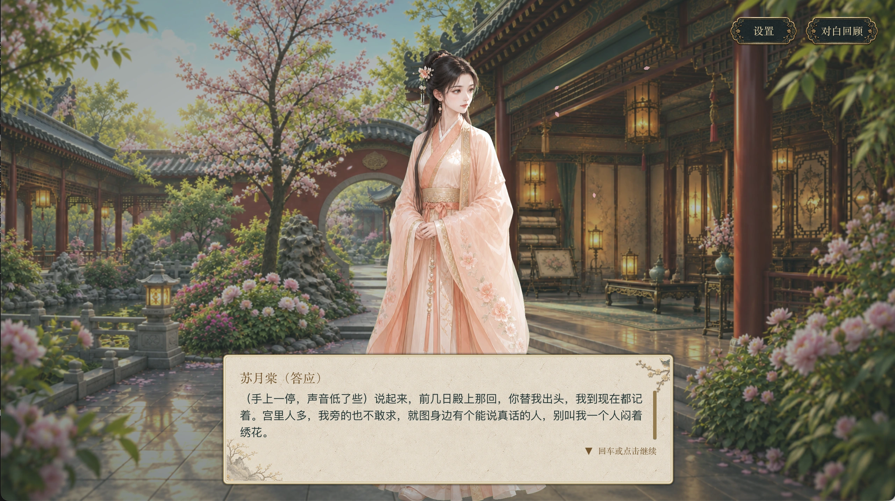

宫阙春秋
AI 宫廷生活模拟。每个角色不仅拥有记忆、能够自主交互，还配有独立的语言风格、性格特征与背景卡片。
项目类型：AI 原生游戏 / 社会模拟 / 生成式叙事
个人贡献：独立完成产品策划、交互设计、AI 系统架构、原型开发与评测
核心技术：LLM · Utility AI · 角色记忆 · 叙事导演 · Godot
项目背景与设计目标
《宫阙春秋》是一款融合 LLM 与传统游戏 AI 的开放式宫廷生活模拟游戏。玩家通过日常社交、身份晋升、情感互动与权谋博弈，参与由自主 NPC 共同构成的动态宫廷社会。共同经历会持续影响角色关系与后续事件。


从已有体验中识别问题
以《深宫曲》为代表的宫廷生活模拟游戏，展现了角色成长、复杂人际关系与戏剧性事件的吸引力。在项目调研中，我将部分 AI 宫斗产品的体验局限归纳为四点。
- 角色缺乏自主性。互动主要由玩家发起，NPC 缺少持续运作的自主社交机制。
- 角色语言同质化。人物设定存在差异，但实际表达缺乏辨识度。
- 叙事节奏缺乏控制。开放式对话容易陷入重复、平淡的日常互动。
- 模型调用影响响应速度。高频使用 LLM 规划行为，会增加等待时间与运行成本。
核心设计目标
围绕这些问题，项目确立了三个体验目标。
- 稳定且鲜明的人格。使角色的表达、决策与情感反馈符合身份、性格及历史经历。
- 持续演化的关系。让角色拥有独立目标与社交行为，使关系随共同经历发生变化。
- 持续产生故事的互动。通过动态事件与叙事节奏调控，兼顾自由交互与戏剧性体验。
设计思路与机制分工
玩家的每一次交互，都可能影响当前对话、人物关系、角色记忆及未来事件。
围绕这一思路，项目将角色体验拆解为相互关联的几部分。
| 体验目标 | 对应设计 |
|---|---|
| 角色具有鲜明辨识度 | 结构化角色卡，分别约束人格、行为与语言表达 |
| 关系能够持续发展 | 多维人物关系、主动社交与长期记忆 |
| 互动持续产生故事 | 不同类型的动态事件与叙事导演 |
| 减少交互等待 | Utility AI、LLM 与规则系统分工 |
核心体验与交互机制
角色如何主动建立关系
NPC 根据自身性格、目标、社会身份和人际关系，选择日常行动与交互对象。玩家与 NPC 共用赠礼、邀约、示爱、流言传播、暗杀及秘密幽会等社交机制。
人物之间可以同时存在亲近、信任、戒备、爱慕等关系数值，使角色态度具有多种变化。行动改变关系，经历进入记忆，关系与记忆再影响后续互动。


同一句话，角色如何回应
角色卡分别记录身份与背景、人格与行为、社会关系、记忆与经历、语言与表达。
系统根据交互任务提取相关信息。性格与目标影响角色想做什么，语言风格决定这句话怎样说出口。语言约束涵盖称谓、词汇、句式、语气、修辞，以及关系变化下的表达差异。
语言对比
御花园偶遇不同 NPC，玩家输入同一句话。
我想再陪你待一会儿，你不会嫌我烦吧？


共同经历如何影响下一次互动
角色会根据自身人格，对同一事件形成不同解释。一次公开维护可能被重情义的角色理解为恩情，也可能被谨慎多疑的角色视为别有用心。
记忆系统保留当前互动上下文、日常经历和重要人生事件，并将角色的主观记忆与客观世界状态分开，限制角色能够获知的信息范围。
交互示例 NPC 在后续对话中回忆玩家曾公开维护自己

用声音与场景传达情绪
季节和昼夜通过场景色彩、光照与粒子效果呈现，环境音随地点与时间变化。宴会、私会和宫廷冲突配有事件音乐，通过配器、节奏与氛围，为文本叙事提供额外的情绪线索。
原型实现与 AI 架构
为兼顾角色自主性、内容丰富度与响应速度，项目采用 Utility AI、LLM 与规则系统协同的混合架构。
- Utility AI 根据人格、目标、关系与当前状态，为候选行为评分，再通过概率机制选择行动和社交对象。
- LLM 根据角色卡、相关记忆、事件目标与环境生成内容，并使用不同的叙事约束处理日常交流、情感互动与权谋冲突。
- 规则系统 维护身份、关系、资源和世界事件，校验生成结果并更新状态。
- 叙事导演 根据游戏进程、人物关系与近期事件，调度事件与叙事节奏。
这些模块共同形成「行动 → 事件生成 → 结果校验 → 世界状态更新 → 关系变化与记忆记录」的交互闭环。
评测与迭代
角色语言与内容质量
采用 A/B 盲测比较不同角色卡设计、技术架构与 Prompt 方案，关注语言辨识度、人设一致性、对话自然度，以及生成内容与历史经历的一致性。
响应性能
性能测试关注 p50、p95 延迟、降级率、重试率与 Token 缓存命中率。通过更换任务内容，降低重复请求对缓存结果的干扰。
| 服务 | 样本数 | p50 秒 | p95 秒 | 降级率 | 重试率 | 缓存命中 |
|---|---|---|---|---|---|---|
| 互动对话 | 60 | 2.97 | 3.69 | 0% | 3.3% | 69.4% |
| 互动结算 | 60 | 2.11 | 3.34 | 0% | 6.7% | 37.0% |
| 行动建议 | 20 | 1.57 | 1.88 | 0% | 0% | 26.4% |
| 场景摘要 | 20 | 1.43 | 1.74 | 0% | 0% | 17.9% |
| 情感文本 | 20 | 1.74 | 1.97 | 0% | 0% | 28.9% |
| 赴约开场 | 20 | 2.15 | 2.48 | 0% | 0% | 41.8% |
| 记忆整理 | 未列出 | 2.75 | 5.14 | 0% | 10% | 33.5% |
| 关系反思 | 未列出 | 2.25 | 4.50 | 0% | 0% | 0% |
当前测试中，核心互动对话服务的 p50 延迟为 2.97 秒，p95 为 3.69 秒，Token 缓存命中率为 69.4%。表中八项服务均未触发降级返回。
设计总结与后续方向
《宫阙春秋》围绕人格一致性、自主行为、长期记忆与动态叙事，探索传统游戏 AI 与生成式 AI 在持续角色互动中的结合方式。
目前已实现 NPC 之间的自主互动、NPC 对玩家的主动社交及记忆机制。后续计划增强浪漫互动中的暧昧与情感拉扯，深化秘密恋情的禁忌感与戏剧张力。尚未实装的阴谋与把柄系统，将进一步丰富人物之间的利益冲突与权力博弈。
← 返回作品集